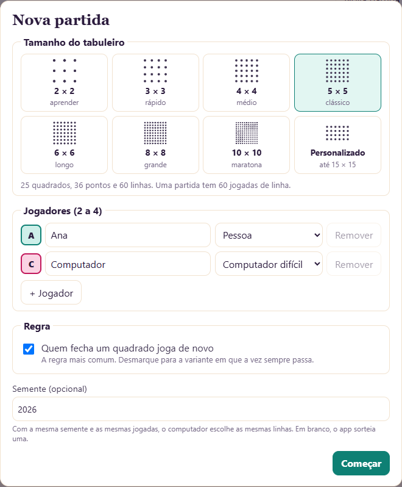
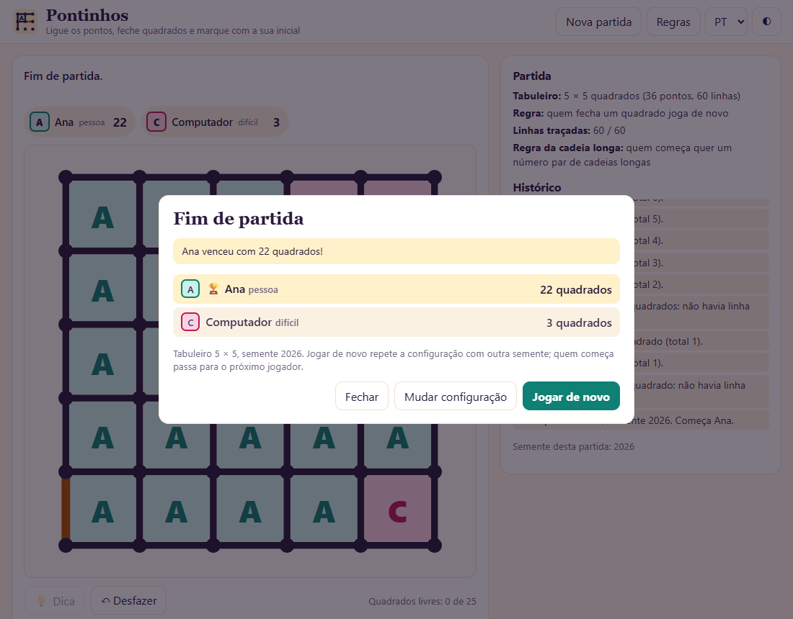
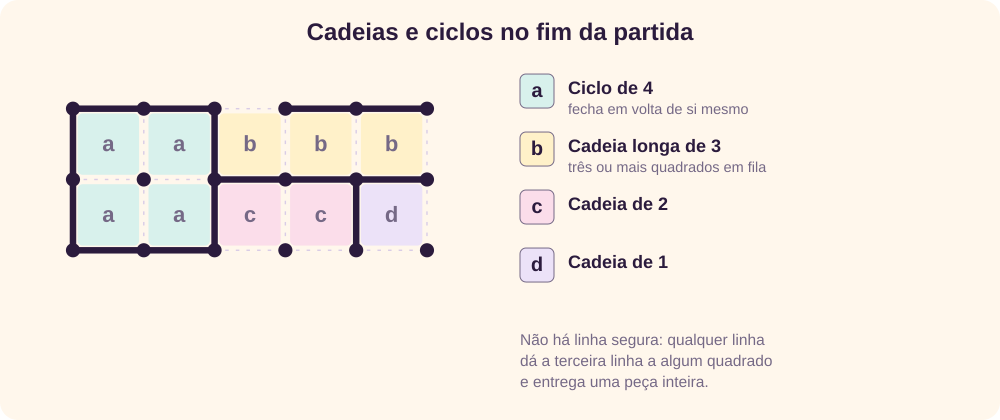
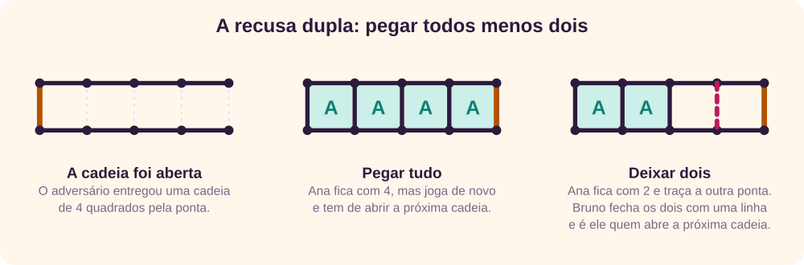
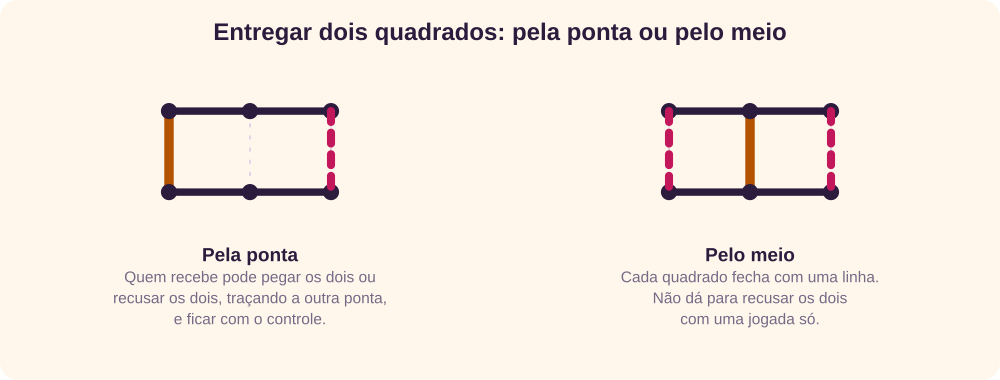
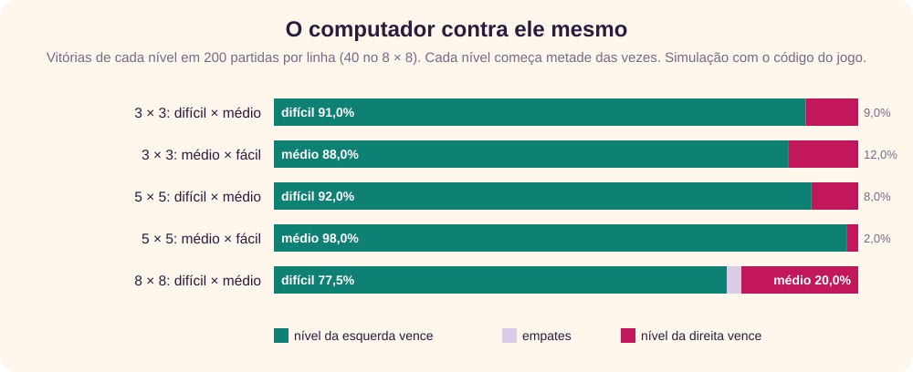

O jogo
Pontinhos é um jogo de lápis e papel. Começa com uma grade de pontos. Na sua vez, você liga dois pontos vizinhos com uma linha. Quem traça o quarto lado de um quadrado marca ali a sua inicial e joga de novo. Quando não sobra nenhuma linha, vence quem tem mais quadrados. [2]
O app deste site joga Pontinhos em tabuleiros de 2 × 2 a 15 × 15 quadrados, com 2 a 4 jogadores, cada um pessoa ou computador em três níveis. [1] É um único arquivo HTML, que funciona sem internet e em quatro idiomas.
Uma breve história
O jogo foi publicado em 1889 pelo matemático francês Édouard Lucas, com o nome de La Pipopipette. [2] [5] Segundo a Wikipédia em francês, Lucas o descreveu no livro Jeux scientifiques pour servir à l’histoire, à l’enseignement et à la pratique du calcul et du dessin e atribuiu a invenção aos seus alunos da École polytechnique. [4]
Um jogo, muitos nomes
- Português: Pontinhos ou Timbiriche. [2]
- Inglês: Dots and Boxes, e também boxes, dots and dashes e pigs in a pen (porcos no chiqueiro). [3]
- Espanhol: Timbiriche, além de nomes regionais como puntitos, cuadritos e el juego de los cuadraditos. [5]
- Italiano: Punti e linee. [6]
Brincadeira de criança, assunto de matemático
O matemático Elwyn Berlekamp escreveu um livro inteiro sobre a estratégia do jogo, The Dots-and-Boxes Game: Sophisticated Child’s Play (“brincadeira de criança sofisticada”), publicado em 2000, e já havia tratado dele num capítulo de Winning Ways for your Mathematical Plays, com John Conway e Richard Guy. [3] [8] A Wikipédia em inglês registra que jogar de forma ótima é um problema PSPACE-completo: em termos práticos, não se conhece um atalho para calcular a melhor jogada em tabuleiros grandes. [3]
↑ Voltar ao topoDivergências nas fontes. A data de 1889 está nas Wikipédias em português, espanhol e francês; a em inglês diz apenas “século XIX” e cita um texto de Lucas de 1895, L’arithmétique amusante. Só a Wikipédia em francês atribui a invenção aos alunos de Lucas. Sobre o tamanho clássico, a Wikipédia em inglês diz que 2 × 2 quadrados serve para aprender e 5 × 5 quadrados é bom para especialistas; a em espanhol diz que o mais comum e mais estudado é o de 5 por 5 pontos (4 × 4 quadrados), numa frase marcada como sem fonte. [2] [3] [4] [5]
As regras
- Um tabuleiro de R × C quadrados tem (R + 1) × (C + 1) pontos. No app, o 5 × 5 tem 36 pontos e 60 linhas possíveis.
- Na sua vez, trace uma linha horizontal ou vertical entre dois pontos vizinhos que ainda não estejam ligados. Linhas diagonais não valem. [5]
- Quem completa o quarto lado de um quadrado marca nele a sua inicial e joga de novo. [2] [3] Uma única linha pode fechar dois quadrados vizinhos ao mesmo tempo.
- Jogar de novo não é opcional: depois de fechar, você traça mais uma linha, mesmo que ela entregue quadrados ao adversário.
- A partida acaba quando todas as linhas estão traçadas. Vence quem tem mais quadrados. Com um número par de quadrados, pode dar empate.
Variante: a vez sempre passa
A Wikipédia em italiano registra uma variante em que quem fecha um quadrado não joga de novo: a vez passa sempre. [6] No app, ela aparece desmarcando Quem fecha um quadrado joga de novo. Nessa variante, as estratégias de cadeias desta página deixam de valer, e o computador difícil não faz recusas duplas.
↑ Voltar ao topoComo jogar no app
1. Monte a partida
Na primeira visita, o app abre a janela Nova partida. Escolha o tamanho do tabuleiro, monte de 2 a 4 jogadores e decida a regra. Cada jogador pode ser Pessoa ou Computador fácil, médio ou difícil. Pessoas jogam no mesmo aparelho, uma de cada vez.

| Tabuleiro | Quadrados | Pontos | Linhas | Quem começa quer cadeias longas em número |
|---|---|---|---|---|
| 2 × 2 | 4 | 9 | 12 | ímpar |
| 3 × 3 | 9 | 16 | 24 | par |
| 4 × 4 | 16 | 25 | 40 | ímpar |
| 5 × 5 | 25 | 36 | 60 | par |
| 6 × 6 | 36 | 49 | 84 | ímpar |
| 8 × 8 | 64 | 81 | 144 | ímpar |
| 10 × 10 | 100 | 121 | 220 | ímpar |
| 15 × 15 (Personalizado, máximo) | 225 | 256 | 480 | par |
A última coluna é a regra da cadeia longa, explicada em Estratégia. Em Personalizado, escolha de 1 a 15 linhas e colunas, por exemplo 3 × 7. As iniciais saem do nome; se dois nomes começam com a mesma letra, o app usa duas letras, como AS para Ana Souza e AL para Ana Lima.
A semente define as escolhas do computador quando ele tem mais de uma jogada igualmente boa. Com a mesma semente e as mesmas jogadas, a partida se repete igual. Em branco, o app sorteia uma, que aparece embaixo do histórico.
2. Trace as linhas
- Passe o mouse entre dois pontos: a linha possível aparece pontilhada. Clique ou toque para traçar.
- A última linha traçada fica em laranja. Um quadrado fechado ganha a cor e a inicial de quem o fechou.
- Acima do tabuleiro, a frase diz de quem é a vez e o que aconteceu, como “Ana fechou 1 quadrado e joga de novo”. O placar destaca quem joga agora.
3. Dica e desfazer
- 💡 Dica marca uma linha piscando e explica o motivo: fecha um quadrado, é segura, entrega o mínimo, recusa os dois últimos de uma cadeia ou é a melhor calculando o fim. A dica usa o mesmo raciocínio do computador difícil.
- ↶ Desfazer volta até antes da sua última linha e apaga também as respostas do computador. Entre pessoas, volta uma linha de cada vez.
4. Teclado
| Tecla | O que faz |
|---|---|
| Tab | Chega ao tabuleiro. |
| Setas | Movem o cursor dourado entre as linhas livres. O leitor de tela anuncia a linha e se ela fecha um quadrado, é segura ou dá a terceira linha. |
| Enter ou Espaço | Traça a linha do cursor. |
| D | Mostra a dica. |
| Ctrl+Z | Desfaz. |
5. Fim da partida

A partida fica salva no navegador: feche a página e abra de novo para continuar. O painel Partida, ao lado do tabuleiro, mostra o tamanho, a regra, quantas linhas já foram traçadas e, em partidas de dois jogadores, a paridade que a regra da cadeia longa recomenda para quem começou. O seletor do topo troca o idioma, e o botão ◐ alterna os temas claro e escuro.
↑ Voltar ao topoEstratégia
1. Não dê a terceira linha
Para quem está começando, a única estratégia é evitar traçar o terceiro lado de um quadrado. [3] Um quadrado com três lados é um presente: o próximo jogador o fecha e ainda joga de novo. Linhas que não dão a terceira linha a nenhum quadrado são seguras. No começo da partida quase todas são.
2. Cadeias e ciclos
As linhas seguras acabam. A partir daí, toda linha entrega quadrados, e o tabuleiro se divide em cadeias: grupos de quadrados vizinhos em que qualquer jogada dá todos eles ao adversário. [3] Uma cadeia com três quadrados ou mais é uma cadeia longa. [7] Quando a cadeia fecha em volta de si mesma, sem ponta, é um ciclo.

Quando for obrigado a entregar, entregue a menor peça. Uma cadeia de 1 custa um quadrado; uma cadeia longa pode custar a partida.
3. A recusa dupla: pegue todos menos dois
Quando o adversário abre uma cadeia longa, o natural é pegar todos os quadrados. Mas quem fecha joga de novo e, se não sobrou linha segura, tem de abrir a próxima cadeia. A saída é pegar todos menos os dois últimos e traçar a linha da ponta: os dois quadrados que sobram ficam para o adversário, que os fecha com uma linha só e depois é obrigado a abrir a próxima cadeia. [3] Em inglês, a jogada se chama double-cross ou double-dealing.

Quem consegue fazer o adversário abrir a primeira cadeia longa tem o controle e, com cadeias longas o bastante, vence. [3] A recusa custa dois quadrados por cadeia; num ciclo, a mesma ideia custa quatro, porque sobram dois pares. Por isso ela só compensa quando o que vem depois vale mais. O computador difícil faz essa conta antes de recusar.
4. Entregue pares pelo meio

Se for obrigado a entregar uma cadeia de dois, trace a linha do meio. Pela ponta, o adversário pode recusar os dois e manter o controle. Pelo meio, cada quadrado fecha com uma linha diferente, e a recusa dupla deixa de ser possível.
5. A regra da cadeia longa
Quem vai ter o controle no fim? Para dois jogadores, a regra da cadeia longa responde pela paridade. Num tabuleiro de m linhas e n colunas de quadrados: se m e n são pares, quem começa deve jogar para que o número de cadeias longas seja ímpar; se m ou n é ímpar, para que seja par. Os ciclos não contam como cadeias longas. [7]
- No 5 × 5, quem começa quer um número par de cadeias longas; o segundo jogador quer um número ímpar.
- No 4 × 4, 6 × 6, 8 × 8 e 10 × 10, quem começa quer um número ímpar.
- Durante o meio da partida, as linhas seguras que você escolhe podem juntar ou separar cadeias. É ali que se disputa a paridade.
O app mostra essa recomendação no painel Partida. O computador do app não planeja a paridade no meio da partida: ele usa a recusa dupla e o cálculo do fim, mas escolhe as linhas seguras ao acaso.
↑ Voltar ao topoO que o computador do app mostra
Os três níveis seguem regras simples e conferíveis:
- Fácil: fecha quadrados quando pode, na maioria das vezes, mas muitas vezes dá a terceira linha.
- Médio: fecha tudo o que pode, só joga linhas seguras e, quando elas acabam, entrega a jogada que dá menos quadrados.
- Difícil: faz o mesmo que o médio, recusa os dois últimos de uma cadeia quando a conta do fim indica que compensa, entrega pares pelo meio e, com 18 linhas livres ou menos e dois jogadores, calcula todas as sequências até o fim e escolhe a melhor.
Com 3 ou 4 jogadores, o difícil usa as mesmas regras, pensadas para dois. Para medir a diferença entre os níveis, coloquei o computador para jogar contra ele mesmo.

| Tabuleiro | Partida | Partidas | Esquerda vence | Empates | Direita vence |
|---|---|---|---|---|---|
| 3 × 3 | difícil × médio | 200 | 91,0% | 0,0% | 9,0% |
| 3 × 3 | médio × fácil | 200 | 88,0% | 0,0% | 12,0% |
| 5 × 5 | difícil × médio | 200 | 92,0% | 0,0% | 8,0% |
| 5 × 5 | médio × fácil | 200 | 98,0% | 0,0% | 2,0% |
| 8 × 8 | difícil × médio | 40 | 77,5% | 2,5% | 20,0% |
Como foi medido. Cada linha usa as sementes 1 a 200 (1 a 40 no 8 × 8), e cada nível começa metade das partidas. As partidas rodaram no Chromium, com a mesma função de jogada do app. São números de uma simulação: medem esse computador contra ele mesmo, não pessoas. Num teste menor, de 30 partidas no 15 × 15, o difícil venceu o médio em 56,7%: nos tabuleiros grandes, o fim de jogo tem formas que as regras do difícil não decompõem. A jogada mais lenta do difícil levou 0,4 segundo num computador de mesa; celulares mais lentos podem demorar mais.
↑ Voltar ao topoErros comuns
“Fechar um quadrado é sempre bom.”
No meio da partida, sim. No fim, pegar todos os quadrados de uma cadeia pode obrigar você a abrir a próxima cadeia longa. Às vezes, deixar dois vale mais.
“Se não há linha segura, tanto faz.”
Não. Entregue a menor peça, e uma cadeia de dois pelo meio. A diferença pode ser de vários quadrados.
“Quem está na frente no meio da partida vai ganhar.”
Os quadrados do fim vêm em cadeias, muitas vezes longas. Quem tem o controle pode virar o placar de uma vez.
“Depois de fechar, a vez passa.”
Na regra comum, quem fecha joga de novo e é obrigado a traçar outra linha. Só na variante a vez passa sempre.
“Vale linha na diagonal.”
Não. Só linhas horizontais ou verticais entre pontos vizinhos.
Glossário
| Termo | Significado |
|---|---|
| Cadeia | Grupo de quadrados vizinhos em que qualquer linha entrega todos eles ao adversário. |
| Cadeia longa | Cadeia com três quadrados ou mais. |
| Ciclo | Cadeia que fecha em volta de si mesma, sem ponta. |
| Controle | Situação de quem faz o adversário abrir as cadeias longas. |
| Entrega pelo meio | Abrir uma cadeia de dois pela linha do meio, para que não possa ser recusada. |
| Linha segura | Linha que não dá o terceiro lado a nenhum quadrado. |
| Pipopipette | Nome que Édouard Lucas deu ao jogo em 1889. |
| Recusa dupla | Pegar todos os quadrados de uma cadeia menos os dois últimos, deixando-os ao adversário; em inglês, double-cross. |
| Regra da cadeia longa | Regra de paridade que diz quantas cadeias longas cada jogador quer, conforme o tamanho do tabuleiro. |
| Semente | Número que define as escolhas do computador no app. |
Revisão rápida
1. Quantas linhas tem um tabuleiro de 3 × 3 quadrados?
24: são 4 fileiras de 3 linhas horizontais e 3 fileiras de 4 linhas verticais.
2. O que acontece quando você fecha um quadrado?
Você marca a sua inicial nele e joga de novo, traçando mais uma linha.
3. Por que evitar a terceira linha de um quadrado?
Porque o próximo jogador fecha o quadrado e ainda joga de novo.
4. O adversário abriu uma cadeia de 5, e depois dela só restam cadeias longas. O que fazer?
Pegar 3 e deixar os 2 últimos: o adversário fecha esses dois e tem de abrir a próxima cadeia.
5. Por que entregar uma cadeia de dois pelo meio?
Porque assim cada quadrado fecha com uma linha diferente, e o adversário não pode recusar os dois para manter o controle.
6. No 5 × 5, quem começa quer um número par ou ímpar de cadeias longas?
Par, porque 5 é ímpar. No 4 × 4, ímpar.
7. Ciclos contam na regra da cadeia longa?
Não. Só cadeias com três quadrados ou mais.
8. Para que serve a semente no app?
Ela repete as escolhas do computador. Com a mesma semente e as mesmas jogadas, a partida sai igual.
Referências
- Giovani Perotto Mesquita, “Pontinhos”, jogo deste site, giovanipm.github.io/Pontinhos.html.
- Wikipédia, “Timbiriche (jogo)”, acesso em 20/11/2026, pt.wikipedia.org/wiki/Timbiriche_(jogo).
- Wikipedia, “Dots and boxes”, acesso em 20/11/2026, en.wikipedia.org/wiki/Dots_and_boxes. Traz a história, as regras, as cadeias, a recusa dupla e o controle; cita Berlekamp (2000) e Lucas, L’arithmétique amusante (1895), pp. 204–209.
- Wikipédia, “La Pipopipette”, acesso em 20/11/2026, fr.wikipedia.org/wiki/La_Pipopipette.
- Wikipedia, “Timbiriche (juego)”, acesso em 20/11/2026, es.wikipedia.org/wiki/Timbiriche_(juego). A frase sobre o tabuleiro mais comum está marcada como sem fonte na própria página.
- Wikipedia, “Punti e linee”, acesso em 20/11/2026, it.wikipedia.org/wiki/Punti_e_linee.
- UCLA Mathematics, “Dots and Boxes hints”, acesso em 20/11/2026, math.ucla.edu/~tom/Games/dots&boxes_hints.html. Enuncia a regra da cadeia longa e define cadeia longa como três quadrados ou mais.
- Elwyn Berlekamp, The Dots-and-Boxes Game: Sophisticated Child’s Play, A K Peters, 2000. Não consultado diretamente; citado nas referências 3 e 6.